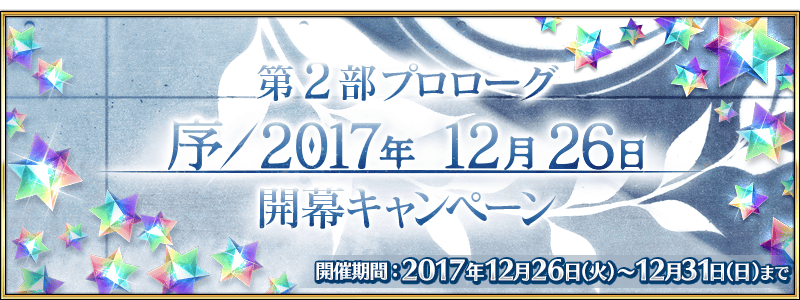
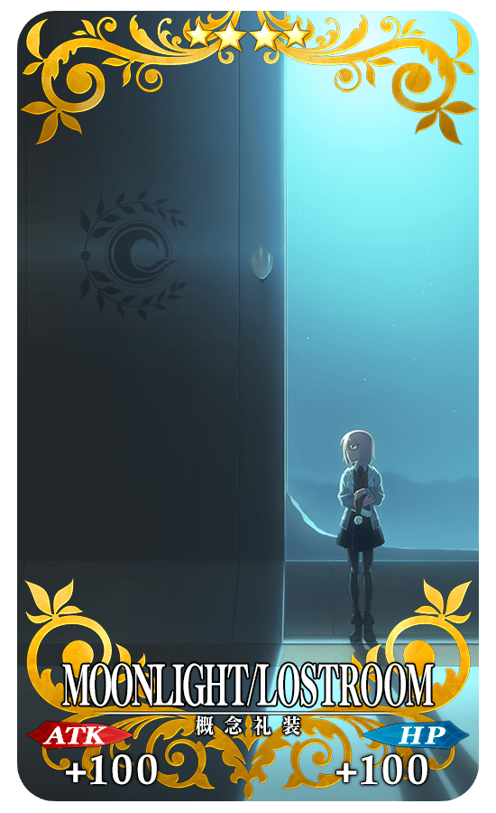
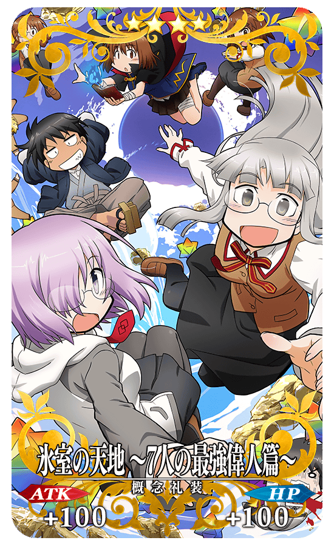

2017年12月25日(一) 23:00～12月31日(日) 20:59的期間，舉辦第2部序章「序／2017年 12月26日」開幕宣傳活動！
◆舉辦期間◆
2017年12月25日(一) 23:00～12月31日(日) 20:592018年1月7日(日) 22:59
※請注意舉辦期間與領取期間變為同一時間。
※2018/1/1(一)修正
下述的期間中，達成在「Master任務」內追加的任務「【期間限定】12/31(日) 16:59前通過『序／2017年 12月26日』」的話，贈送聖晶石30個！
|
◆贈送對象◆ ◆舉辦期間◆ ◆領取期間◆ |
 |
※請注意與每週日23:00更新的普通任務(Weekly)不同欄位，舉辦期間與領取期間有所差異。超過領取期間過的話無法入手報酬。
將自2017年12月31日(日) 21:00放送「Fate Project 大晦日 TV特別 2017」。
為了記念，舉辦期間中達成在「Master任務」內追加的任務「【期間限定】12/31(日) 20:59前通過『序／2017年 12月26日』」的話，贈送使用節目內放送的長篇TV動畫特別「Fate/Grand Order -MOONLIGHT/LOSTROOM-」主視覺圖的記念概念禮裝！
◆贈送對象◆
通過「序／2017年 12月26日」的Master對象
◆舉辦期間◆
2017年12月25日(一) 23:00～12月31日(日) 20:592018年1月7日(日) 22:59
※請注意舉辦期間與領取期間變為同一時間。
※2018/1/1(一)修正
◆領取期間◆
2017年12月25日(一) 23:00～2018年1月7日(日) 22:59
※請注意與每週日23:00更新的普通任務(Weekly)不同欄位，舉辦期間與領取期間有所差異。超過領取期間過的話無法入手報酬。
◆期間限定任務通過報酬◆
|  |
★★★★SR |
舉辦期間中達成在「Master任務」內追加的任務「【期間限定】12/31(日) 20:59前通過『特異點F 炎上汙染都市 冬木』」的話，贈送使用「Fate/Grand Order × 氷室の天地 ～7人の最強偉人篇～」主視覺圖的記念概念禮裝！
◆贈送對象◆
通過「特異點F 炎上汙染都市 冬木」的Master對象
◆舉辦期間◆
2017年12月25日(一) 23:00～2017年12月31日(日) 20:59
◆領取期間◆
2017年12月25日(一) 23:00～2018年1月7日(日) 22:59
※在舉辦期間前通過「特異點F 炎上汙染都市 冬木」的情況，會自動顯示任務達成的狀態。
※請注意與每週日23:00更新的普通任務(Weekly)不同欄位，舉辦期間與領取期間有所差異。超過領取期間過的話無法入手報酬。
◆期間限定任務通過報酬◆
|  |
★★★★SR |